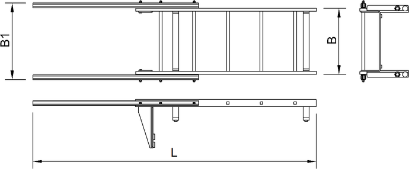
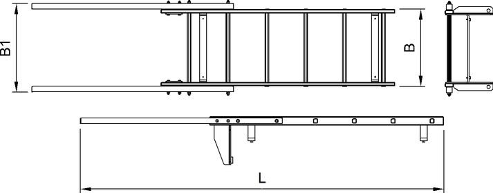

ID_f8751f6acbba4ca7940c473b03e7e589-4478add7f0ba4064b12635e520e83bc0-de-DE.html
true
Leiter* für Oberwagen
Auf der rechten Seite des Oberwagens wird die Leiter mit fünf Sprossen montiert. Die Leiter mit sechs Sprossen ist optional für die linke Seite des Oberwagens erhältlich.

Fig. 325: Abmessungen - Leiter für Oberwagen mit fünf Sprossen
Fig. 325: Abmessungen - Leiter für Oberwagen mit fünf Sprossen
Benennung | Wert | |
|---|---|---|
L | Länge |
2360 mm 7.74 ft |
B | Breite |
559 mm 1.83 ft |
B1 | Breite |
680 mm 2.23 ft |
Gewicht |
14.37 kg 31.68 lb | |
Technische Daten - Leiter für Oberwagen mit fünf Sprossen

Fig. 327: Abmessungen - Leiter für Oberwagen mit sechs Sprossen
Fig. 327: Abmessungen - Leiter für Oberwagen mit sechs Sprossen
Benennung | Wert | |
|---|---|---|
L | Länge |
2710 mm 8.89 ft |
B | Breite |
550 mm 1.8 ft |
B1 | Breite |
664 mm 2.18 ft |
Gewicht |
14.54 kg 32.05 lb | |
Technische Daten - Leiter für Oberwagen mit sechs Sprossen